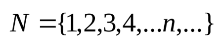
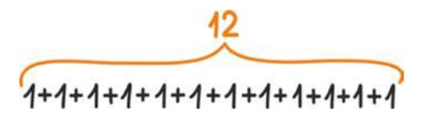

Натуральнi числа— це числа, якi використовуються під час лiчби предметiв. Наприклад : 1, 2, 3, 4, 5, 6, ...
Множину натуральних чисел позначають символом ℕ. Сума і добуток натуральних чисел є число натуральне. Найменшим натуральним числом є 1, а 0 не є натуральним числом. Натуральні числа можна створювати на основі числа 1 і додавання числа 1. Кожне натуральне число ми можемо отримати, якщо додамо одиницю до неї ж самої достатню кількість разів. Наприклад, щоб отримати число 12, нам потрібно до числа 1 додати 1 ще 11 разів.
Отже, можна дійти висновку, що для кожного натурального числа існує ще одне натуральне число, що є більшим від нього на одиницю.